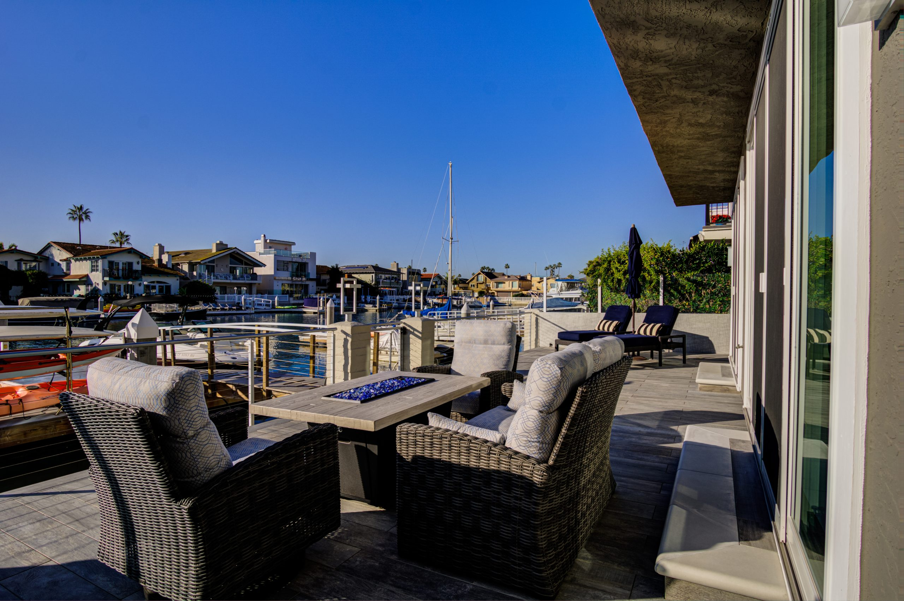
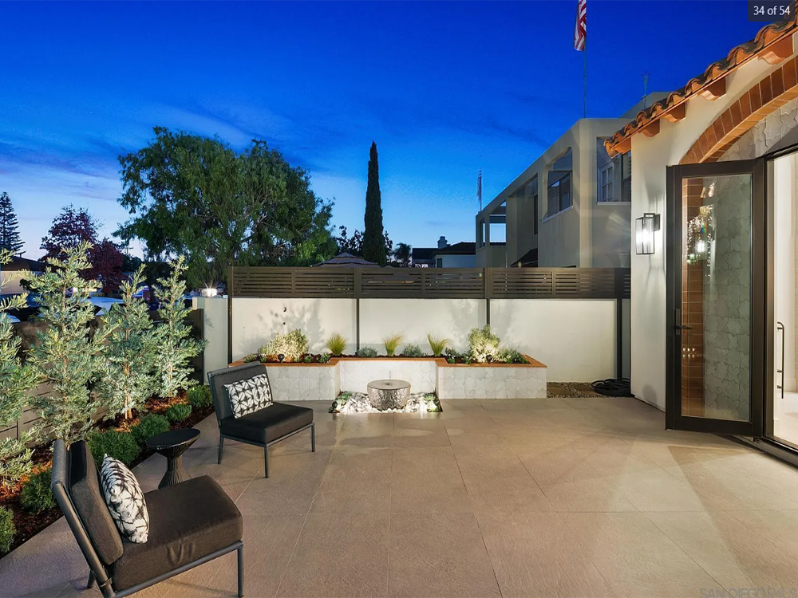
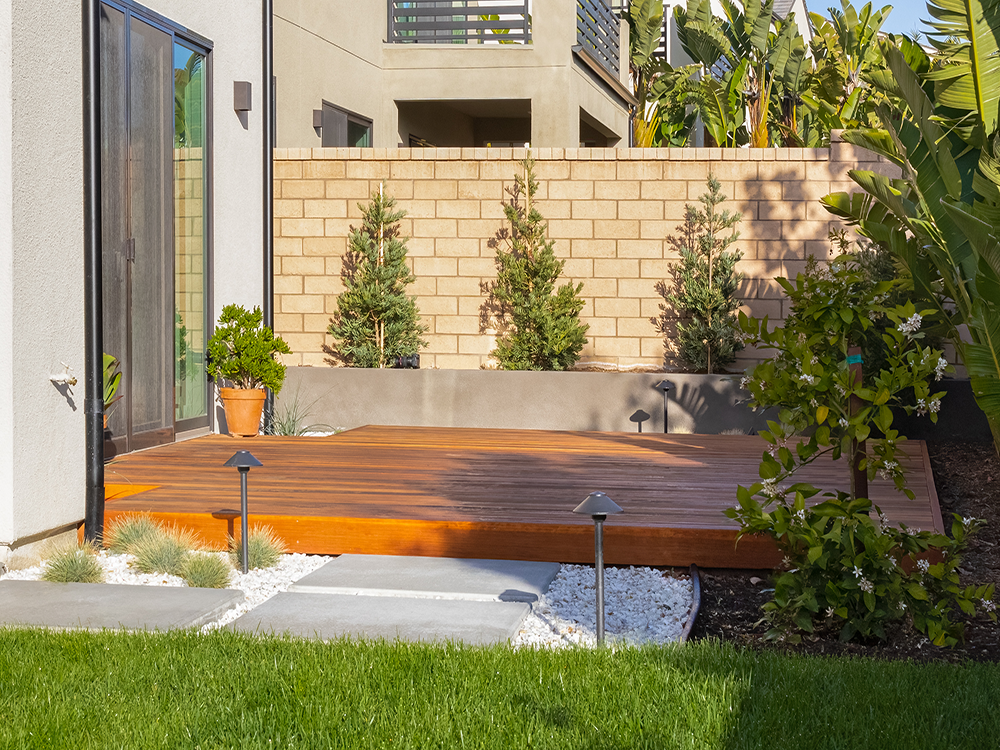
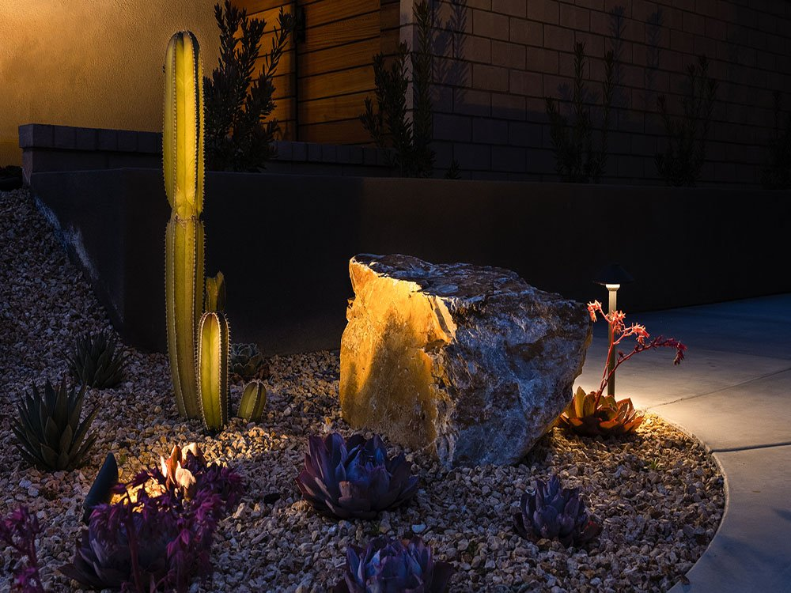

Hardscape, planting, water and lighting for full-scale garden projects across San Diego County.
Most gardens get assembled piece by piece over several years, and it shows. This studio draws the whole scheme first, then builds it.
The work below is shown at the size it was photographed. Anyone choosing between three firms is deciding by eye, so the photographs are given the room to do that.



A conversation about the site, the scope and the budget, before any drawing starts.
Layout, materials and detail resolved on paper, so nothing gets decided in a hurry on site.
Built by one team to one programme, with one person answering the phone.
Terraces, paving, walls and steps. The structure everything else sits on.
Species chosen for this soil and this light, laid out to look right in year one and better in year five.
Pools, rills and features, engineered into the scheme from the start.
Circuits, fittings and levels planned around how the garden gets used at night.
Tell us about the site, what you have in mind, and the budget you are working to. If it is not a fit we will say so early.